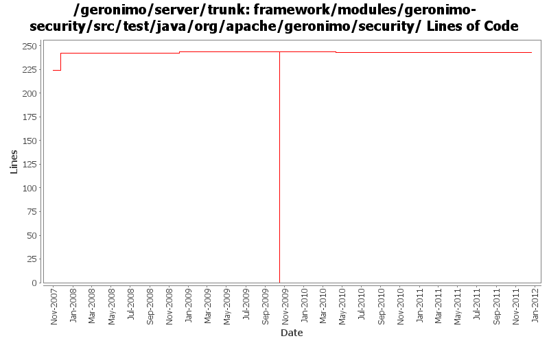

[root]/framework/modules/geronimo-security/src/test/java/org/apache/geronimo/security
 credentialstore
(1 files, 96 lines)
credentialstore
(1 files, 96 lines)
 jaas
(16 files, 2119 lines)
jaas
(16 files, 2119 lines)
 jacc
(0 files, 0 lines)
jacc
(0 files, 0 lines)
 mappingprovider
(1 files, 87 lines)
mappingprovider
(1 files, 87 lines)
 jaspi
(0 files, 0 lines)
jaspi
(0 files, 0 lines)
 providers
(0 files, 0 lines)
providers
(0 files, 0 lines)
 realm
(0 files, 0 lines)
realm
(0 files, 0 lines)
 providers
(2 files, 324 lines)
providers
(2 files, 324 lines)

| Author | Changes | Lines of Code | Lines per Change |
|---|---|---|---|
| Totals | 13 (100.0%) | 271 (100.0%) | 20.8 |
| djencks | 9 (69.2%) | 253 (93.4%) | 28.1 |
| vamsic007 | 3 (23.1%) | 18 (6.6%) | 6.0 |
| xuhaihong | 1 (7.7%) | 0 (0.0%) | 0.0 |
GERONIMO-6240 Make several base geronimo functions (kernel, deployer, etc) DS services and make the car-maven-plugin take advantage of that. Server assembly doesn't work yet, builds framework.
1 lines of code changed in 1 file:
Fix the failed unit cases after using Karaf proxy LoginModule
0 lines of code changed in 1 file:
GERONIMO-4916 step 2 move sandbox osgi framework into trunk
244 lines of code changed in 2 files:
GERONIMO-4916 step 1 remove old framwork
0 lines of code changed in 2 files:
GERONIMO-2622, GERONIMO-4766 Implement jacc handler data so the types dont interfere with each other. ejb and soap handlers not hooked up yet
0 lines of code changed in 2 files:
GERONIMO-4445, GERONIMO-4415 Fix up GeronimoLoginConfiguration and SimpleCredentialStore, use in monitoring console agent
7 lines of code changed in 1 file:
GERONIMO-3582 Review CertificateChainLoginModule
o Added a test
18 lines of code changed in 1 file:
GERONIMO-3570 GERONIMO-3571 GERONIMO-3575 Provide an AbstractLoginModuleTest to uniformize test setup and make it easier to determine if all relevant tests have been supplied.
1 lines of code changed in 1 file:
GERONIMO-3575 Review CertificatePropertiesFileLoginModule
o Added tests to check normal login and bad logins
0 lines of code changed in 2 files: